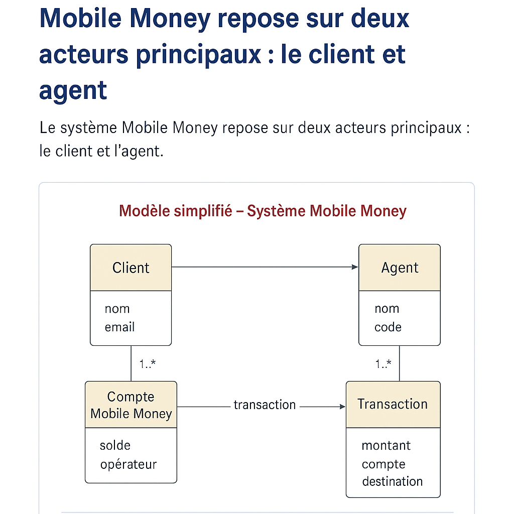

Ce schéma représente une version simplifiée mais complète d’un système Mobile Money, incluant les entités essentielles : Client, Compte, Transaction, Agent, et Opérateur.
Contient les informations personnelles de l'utilisateur : nom, téléphone, email. Un client peut avoir plusieurs comptes Mobile Money.
Représente le portefeuille électronique du client. Il contient le solde, le statut, et l’opérateur associé (ex : Mauritel, Mattel, Chinguitel).
Historique des mouvements entre comptes : montant, compte source, compte destination, date, type (envoi, retrait, dépôt).
Représente un point physique ou un représentant qui réalise les opérations de dépôt/retrait pour les clients.
Identifie le réseau mobile associé au compte (ex : Mauritel, Mattel, Chinguitel). Permet de filtrer les opérations selon l’opérateur.